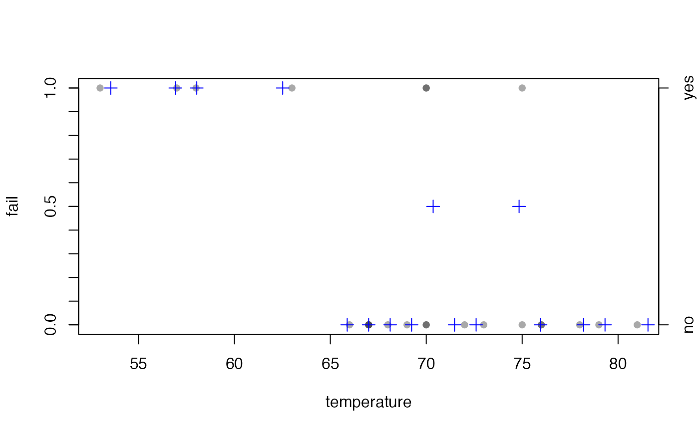
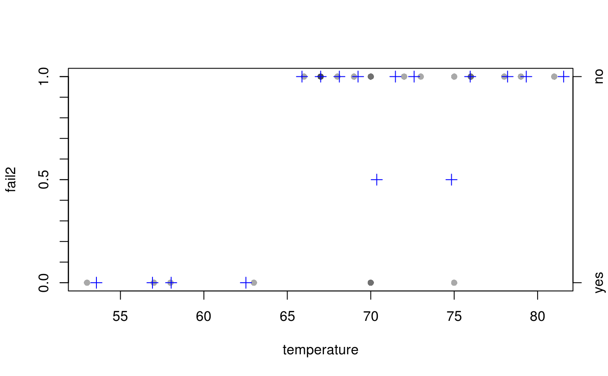
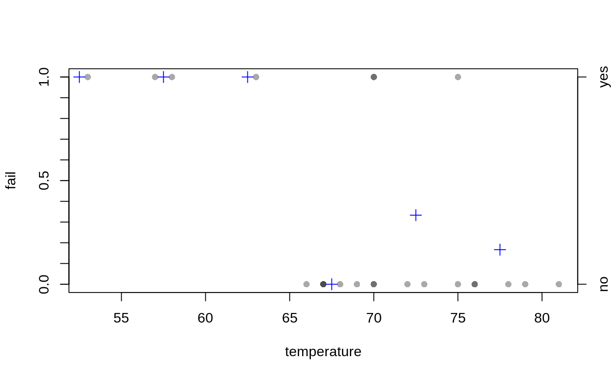
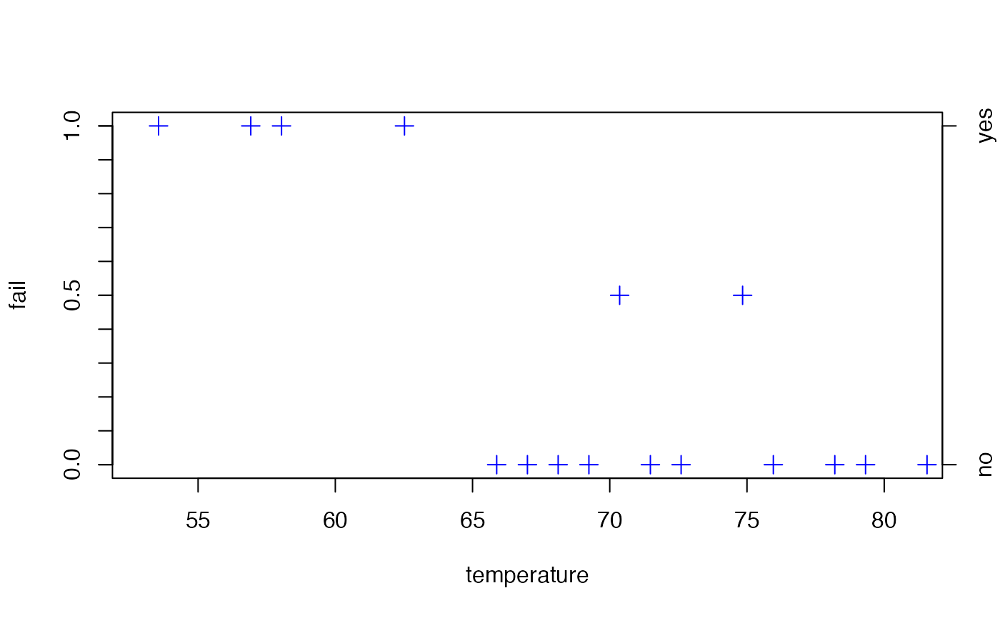
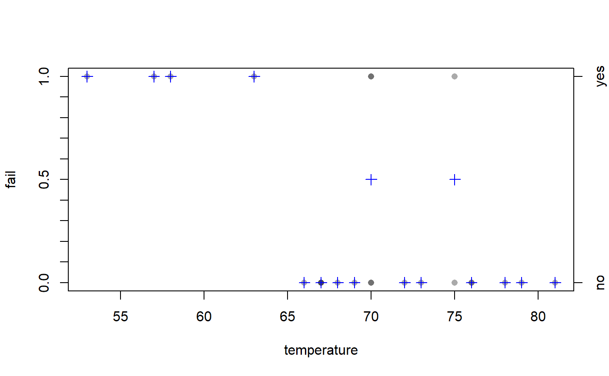

R/plotBinResp.R
plotBinResp.RdA function to plot a binary response variable versus a quantitative explanatory variable.
plotBinResp(x, ...) # S3 method for default plotBinResp( x, y, xlab = paste(deparse(substitute(x))), ylab = paste(deparse(substitute(y))), plot.pts = TRUE, col.pt = "black", transparency = NULL, plot.p = TRUE, breaks = 25, p.col = "blue", p.pch = 3, p.cex = 1.25, yaxis1.ticks = seq(0, 1, 0.1), yaxis1.lbls = c(0, 0.5, 1), yaxis2.show = TRUE, ... ) # S3 method for formula plotBinResp(x, data = NULL, xlab = names(mf)[2], ylab = names(mf)[1], ...)
| x | A quantitative explanatory variable or a formula of the form |
|---|---|
| ... | Other arguments to be passed to the plot functions. |
| y | A binary response variable. |
| xlab | A string for labeling the x-axis. |
| ylab | A string for labeling the y-axis. |
| plot.pts | A logical that indicates ( |
| col.pt | A string used to indicate the color of the plotted points. Will be transparent unless |
| transparency | A numeric that indicates how many points would be plotted on top of each other before the ‘point’ would have the full |
| plot.p | A logical that indicates if the proportion for categorized values of X are plotted ( |
| breaks | A number that indicates how many intervals over which to compute proportions or a numeric vector that contains the endpoints of the intervals over which to compute proportions if |
| p.col | A color to plot the proportions. |
| p.pch | A plotting character for plotting the proportions. |
| p.cex | A character expansion factor for plotting the proportions. |
| yaxis1.ticks | A numeric vector that indicates where tick marks should be placed on the left y-axis (for the proportion of ‘successes’). |
| yaxis1.lbls | A numeric vector that indicates labels for the tick marks on the left y-axis (for the proportion of ‘successes’). |
| yaxis2.show | A logical that indicates whether the right y-axis should be created ( |
| data | The data frame from which the formula should be evaluated. |
None. However, a plot is produced.
This function produces a plot that can be used to visualize the density of points for a binary response variable as a function of a quantitative explanatory variable. In addition, the proportion of “1”s for the response variable at various “levels” of the explanatory variable are shown.
This function is meant to allow newbie students the ability to visualize the data corresponding to a binary logistic regression without getting “bogged-down” in the gritty details of how to produce this plot.
Derek H. Ogle, derek@derekogle.com
## NASA space shuttle o-ring failures -- from graphics package d <- data.frame(temperature=c(53,57,58,63,66,67,67,67,68,69,70,70,70,70, 72,73,75,75,76,76,78,79,81), fail=factor(c(2,2,2,2,1,1,1,1,1,1,2,1,2,1,1,1,1,2,1,1,1,1,1), levels=1:2,labels=c("no","yes"))) ## Default plot (using formula notation) plotBinResp(fail~temperature,data=d)## Controlling where proportions are computed plotBinResp(fail~temperature,data=d,breaks=seq(50,85,5))plotBinResp(fail~temperature,data=d,breaks=10)## Don't plot points, just plot proportions plotBinResp(fail~temperature,data=d,plot.pts=FALSE)## Change left y-axis ticks plotBinResp(fail~temperature,data=d,yaxis1.ticks=c(0,1),yaxis1.lbls=c(0,1))